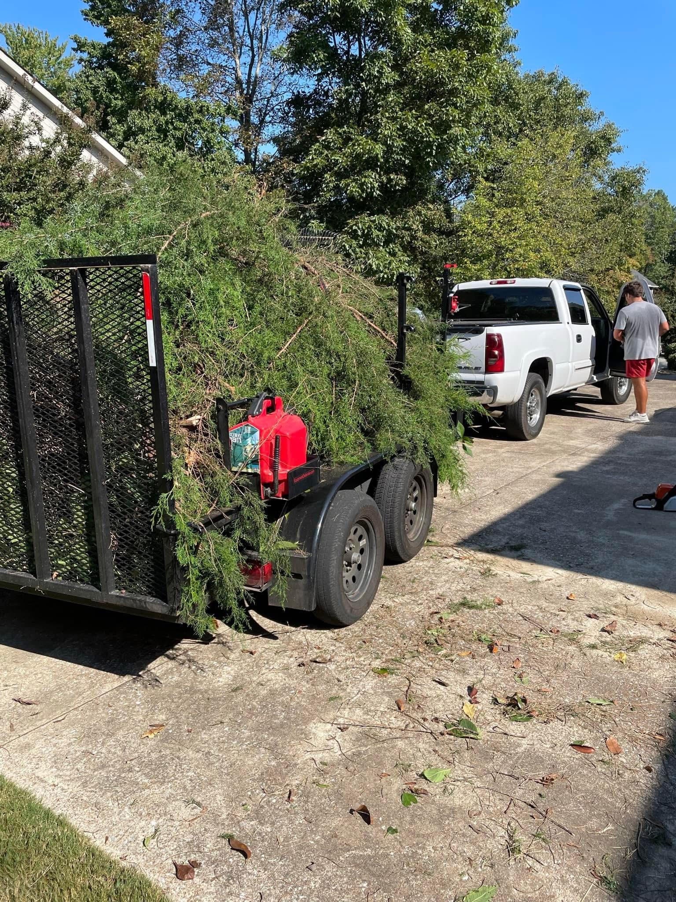

Our Journey: From the Ground Up
How It All Began
The journey started about 4 years ago, when Daniel set out with a little more than a mower, a few tools, and a passion for landscaping. With a focus on quality and customer care, we began transforming outdoor spaces across the community.
Growth Through Hard Work
From the very beginning, our goal was simple: deliver exceptional results and build lasting relationships. Word spread quickly about our attention to detail, reliability, and dedication to each project. As our reputation grew, so did our business.
A Commitment to Quality
While we’ve expanded, we haven’t lost sight of what matters most: personalized service and an unwavering focus on quality. Whether it's a small residential garden or a large commercial project, we approach every job with the same attention to detail and dedication to excellence.
Looking Ahead
We are locally, and family owned and we’re proud of the work we’ve done and the relationships we’ve built over the years. As we continue to grow, we remain committed to helping our clients create outdoor spaces that inspire, comfort, and bring joy.
Thank You for Being Part of Our Journey
We’re honored to serve this wonderful community. We look forward to working with you and helping you bring your outdoor dreams to life—one project at a time.